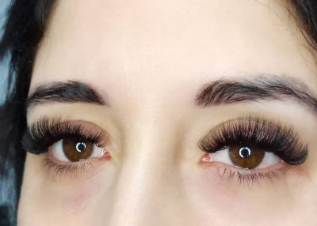

Extensiones de pestañas pelo a pelo

Seguro que en más de una ocasión has pensado en ponerte extensiones de pestañas. Si es así, anímate a hacerlo porque con ellas podrías brillar todo lo que mereces. Una vez colocadas harán que te sientas más bella que nunca y llevarlas te resultará de lo más cómodo; podrás olvidarte de ellas durante al menos tres semanas.
Ten en cuenta que no se trata de pestañas postizas, sino de extensiones, que no es lo mismo. Las postizas son de poner y quitar cada vez que se utilizan, y lo normal es que tengas que dedicar un buen rato a quitártelas antes de meterte en la cama, aunque llegues a casa muy tarde y cansada después de una larga jornada laboral o una noche de fiesta.
Las extensiones son otra cosa: son fijas, no hay que quitárselas, y, por lo tanto, te puedes ir a descansar con ellas puestas porque se mantendrán intactas durante tres semanas. Y además, sin provocar ningún tipo de molestia ocular. En nuestro salón usamos las extensiones de pestañas de seda porque son las más suaves, naturales y no dan alergia.
Se trata de una solución estética que nunca falla, que resulta ideal para aquellas mujeres que quieren alargar sus pestañas. Es lo que ha llevado a ponérselas a muchas celebrities internacionales que son conscientes de que una mirada penetrante constituye la mejor manera de seducir a la cámara de vídeo o al público en general.